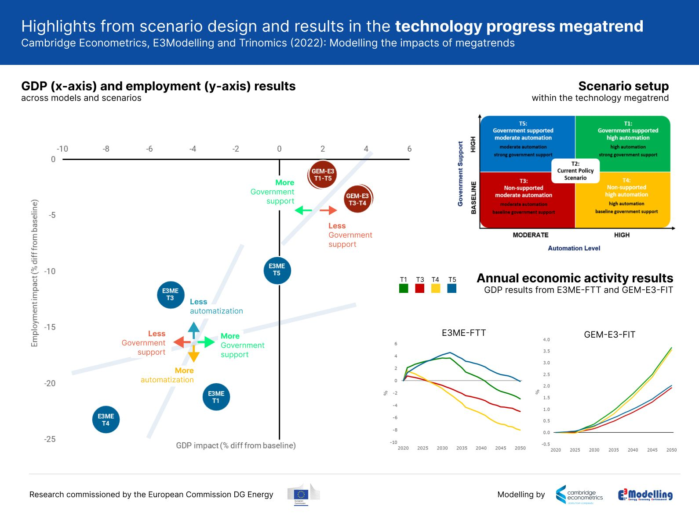

Automation outcomes in different macro models - EU Commission report
Published July 2023
It is frequently acknowledged that all models are wrong, which is probably even more true when models are dealing with high levels of uncertainty, just as in economics. But one has to note that economic models differ in >>how<< they are wrong. Economic models are not the same, in fact they can be quite different in their assumptions, limitations and therefore in their results. This is why it is important to understand what kind of thinking lies behind final results and how these results compare to each other based on the world-view of the respective models.
In the last few years we at Cambridge Econometrics have worked together with Trinomics and E3-Modelling Energy-Economy-Environment on research that were considering socio-economic dimensions of Europe’s energy futures. One piece that came out from that work is our assessment of megatrends using two different E3-type (economics-energy-environment) models: GEM-E3-FIT and E3ME-FTT.
One of these megatrends is automation. Automation is thought to has a dual effect on economies; while the use of industrial robots and automated processes causes job displacements, but it also increases the overall productivity of the economy. We have set up scenarios in both models representing this and have run the models. (Report is here: https://energy.ec.europa.eu/data-and-analysis/energy-modelling/macroeconomic-modelling_en)

As the figure shows: our scenarios produced varied, but negative employment impacts in both models. However, GDP impacts are negative in E3ME, while they are positive in GEM-E3. How this works? Why we got so different results from the two models?
E3ME seems the economy as driven by effective demand. This means that as employment decreases so are wages, which result in shrinking disposable income and therefore lower consumption. Lower consumption then depresses the economy: if there is no demand then there is no need for production. Hence in E3ME as firms invest for automatization people might end up without jobs, lowering their income and eventually the economy-wide consumption. At the same time productivity of the firms increases, but as there are less demand for the goods this does not fully compensate losses.
Contrasting this, GEM-E3 views the economy as driven by supply, i.e. what firms are able to produce determines what will be produced. In this view higher productivity, that results from automatization, decreases costs of production and, through that, prices. Households can buy the goods for less in this case, which can increase their welfare. GEM-E3 also considers that households might be shareholders, therefore the decreasing costs can lead to higher returns on investment, which can boost yields from investments for households.
Which is the right understanding of the economy? What is the reality? Are these even the right questions to ask here? This is what I will try to discuss next time.